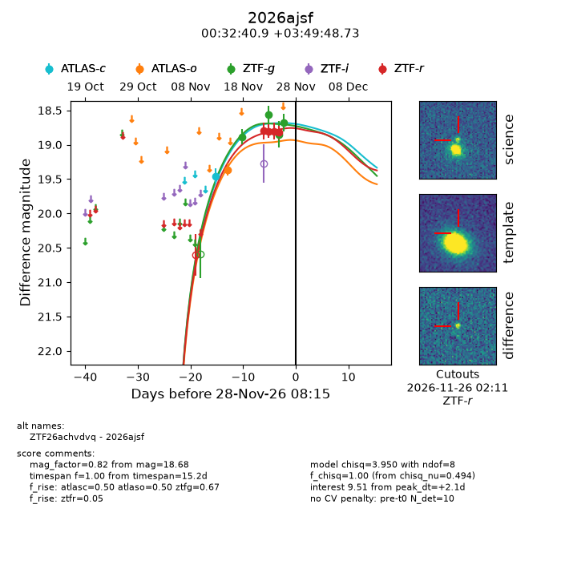
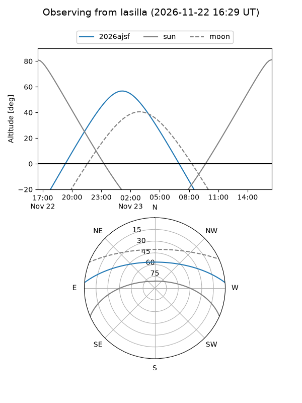
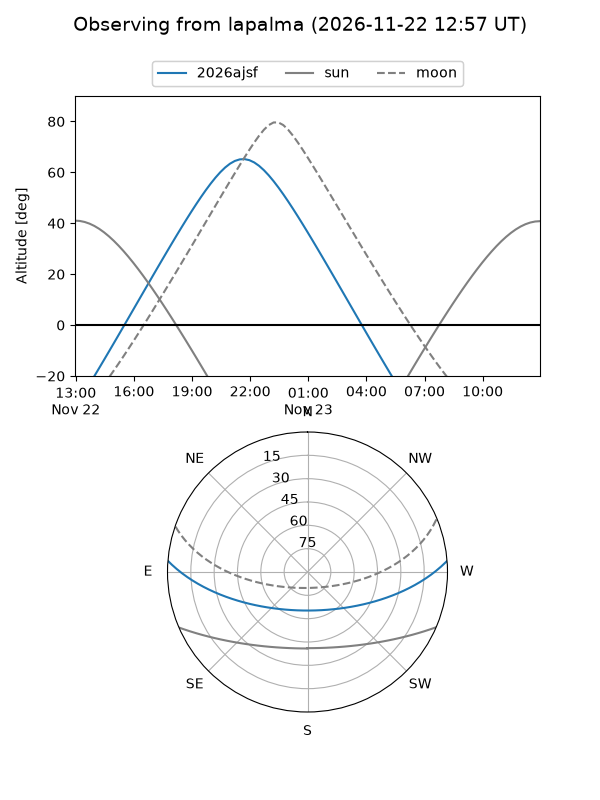
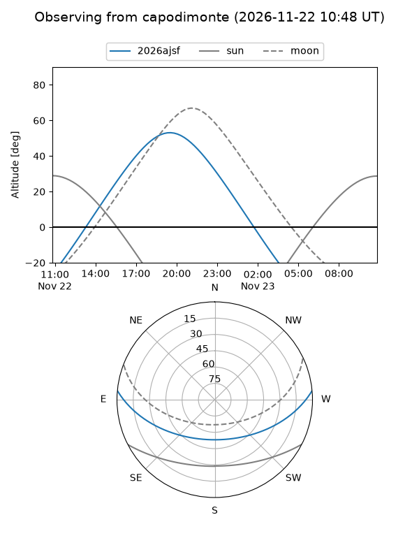
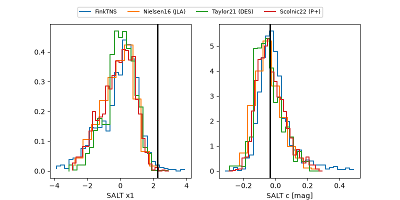

2026ajsf
Target 2026ajsf at 2026-11-28 08:16
Aliases and brokers:
FINK-ZTF: ztf.fink-portal.org/ZTF26achvdvq
Lasair-ZTF: lasair-ztf.lsst.ac.uk/objects/ZTF26achvdvq
ALeRCE-ZTF: alerce.online/object/ZTF26achvdvq
YSE-PZ: ziggy.ucolick.org/yse/transient_detail/2026ajsf
TNS name: wis-tns.org/object/2026ajsf
Direct TNS query: direct search
alt names
ZTF26achvdvq (ztf,fink_ztf)
2026ajsf (tns,yse)
Coordinates:
equatorial (ra, dec) = 8.1704,+3.83020
equatorial (HMS+DMS) = 00:32:40.91,+03:49:48.73
galactic (l, b) = (113.8959,-58.71209)
Flags:
peak dt: +2.1
Photometry:
last atlasc=19.46, atlaso=19.36, ztfg=18.68, ztfr=18.82
1 atlasc, 1 atlaso, 4 ztfg, 4 ztfr detections
Lightcurve

Visibility



Additional plots
